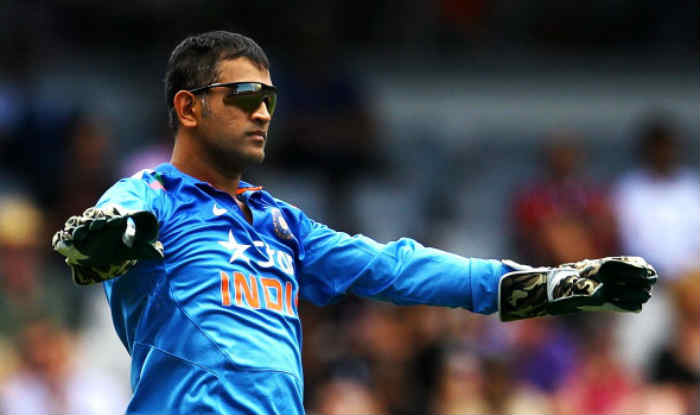
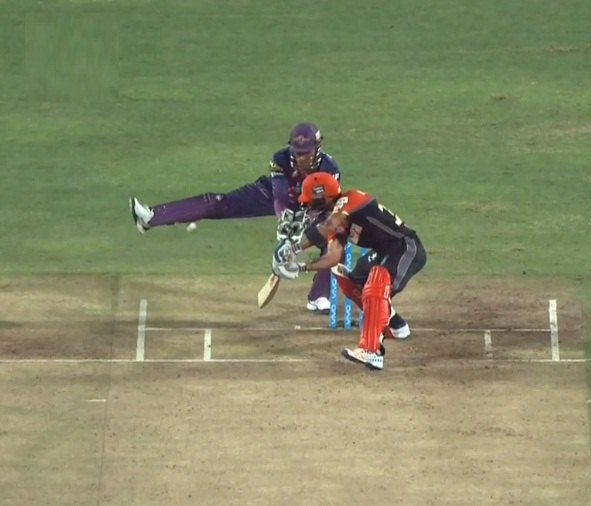
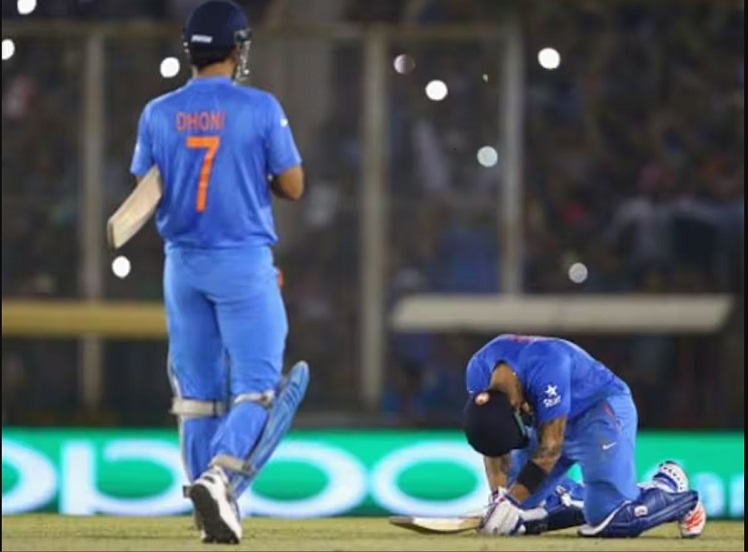
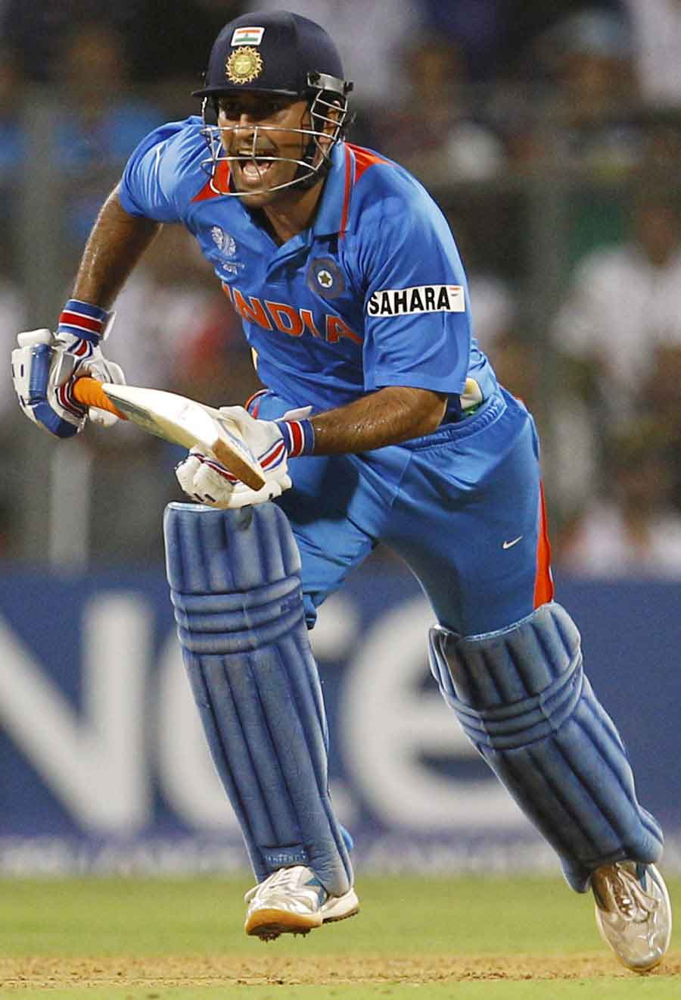
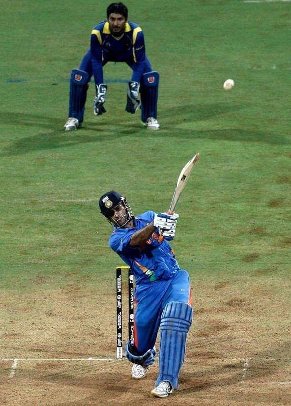
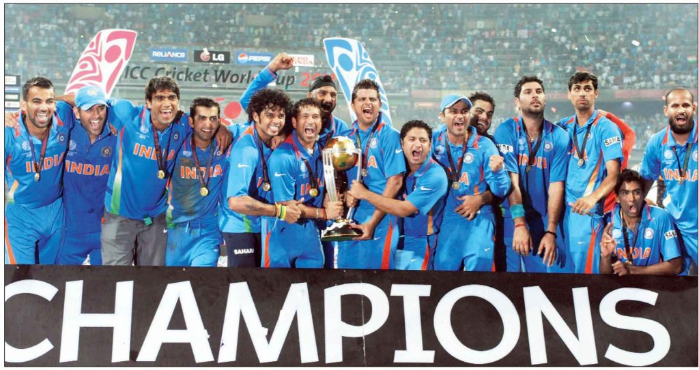
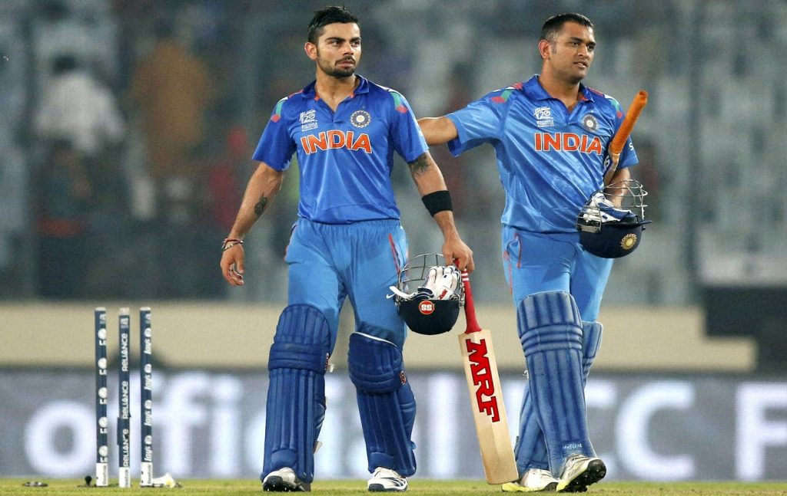

Tribute Page
MS Dhoni - The Man, The Myth, The Legend
Mahendra Singh Dhoni (born 7 July 1981) is a former Indian cricketer. He was captain of the Indian national team in limited-overs formats from 2007 to 2017 and in Test cricket from 2008 to 2014. He plays as a right-handed wicket-keeper-batsman and is also the current captain of Chennai Super Kings in the Indian Premier League. Born in Ranchi, Bihar (now in Jharkhand),His exceptional wicketkeeping skills allowed him to become the regular wicketkeeper at the Commando Cricket Club (1995–1998), he was picked for the 1997/98 season Vinoo Mankad Trophy Under-16 Championship, where he performed well.From 2001 to 2003, He worked as a Travelling Ticket Examiner at Kharagpur railway station under South Eastern Railway in Midnapore, in West Bengal. In Indian domestic cricket he played for Bihar and then for Jharkhand Cricket team. Dhoni's performance in the 2002–03 season included three half-centuries in the Ranji Trophy and a couple of half-centuries in the Deodhar Trophy, as he started gaining recognition for his lower-order contribution as well as hard-hitting batting style. Dhoni made his ODI debut on 23 December 2004, against Bangladesh in Chittagong, and played his first Test a year later against Sri Lanka. He played his first T20I also a year later against South Africa. In 2007, he took over the ODI captaincy from Rahul Dravid and he also selected as T20I captain of India in this year. In 2008, he was selected as Test captain. His captaincy record in Tests format was mixed, successfully leading India to a series win against New Zealand in 2008 and the Border-Gavaskar Trophy (home series in 2010 and 2013) against Australia. In other formats, Dhoni is the first cricketer to be a winning captain of all three major ICC trophies, as under his captaincy, India won the 2007 ICC World Twenty20, the 2011 Cricket World Cup, and the 2013 ICC Champions Trophy, the most by any captain. He also led India to victory in the 2010 and 2016 Asia Cup. Additionally, under his leadership, India won the 2010 and 2011 ICC Test Mace and 2013 ICC ODI Championship. He has scored 17,266 runs in International Cricket (including 10,000 plus runs in ODI Internationals).
Read MoreTest cricket records
- Dhoni is the first Indian wicket-keeper to score 4,000 Test runs.
- After hitting a six in the third Test against England in Southampton, Dhoni completed 50 sixes as a captain, an Indian record.
- Dhoni, with 294 dismissals in his career, ranks first in the all-time dismissals list by Indian wicket-keepers.
ODI cricket records
- Dhoni is the third captain (and the first non-Australian) overall to win 100 games.
- First player to pass 10,000 runs in ODI cricket with having a career average of over 50.
- Most not outs (84) in ODIs.
- Dhoni's 183* against Sri Lanka in 2005 is the highest score by a wicket-keeper.
- Dhoni and Bhuvneshwar Kumar were involved in a partnership of 100 not out against Sri Lanka, which is India's highest eighth wicket partnership in ODIs.
- Dhoni holds the records of the most dismissals in an innings (6) and career (432) by an Indian wicket-keeper.
- Dhoni has the most stumpings (123) by any wicket-keeper in an ODI career, and is so far the only keeper to pass 100 stumpings.
T20I cricket records
- Dhoni holds the record for playing the most T20I innings (76) and scored the most runs (1,153) before scoring a fifty.
- Most stumpings as wicket-keeper in T20Is (34).
- Most catches as wicket keeper in a T20I innings (5).
Combined Test, ODI and T20I records
- He has played the most international matches as captain (332).
- Dhoni is the first, and so far only, wicket-keeper to make 150 stumpings across the three forms of the game. His current total of stumpings in internationals stands at 195.
Things I Adore About MS Dhoni
Calm and Composed!
If there’s one person who comes to mind when you read that sentence, it’s MSD. Whether he’s chasing down an ambitious total, blasting sixes out of the stadium or even losing an easily winnable match, you will find him calm, composed and courteous!
Clever!
For MSD, finding opportunities is like finding grains of sand on a beach! He thinks on his feet and his presence of mind on the field has helped us win matches, even under tough circumstances. Do you remember the famous leg stump incident when the Rising Pune Giants took on the RCB? In what was an unorthodox yet highly effective move, Dhoni stopped a late cut with his right foot and prevented the ball from going past him!
Courageous!
There’s something about big matches and Dhoni. You never know when he’s going to spring one on you! Talking about surprises, remember the 2007 ICC T20 World Cup? When millions sat in front of their TV screens, clutching their poor hearts in immense confusion and anxiety, Dhoni unleashed Joginder Sharma on the field. After the first wide, and the second 6, India was practically hyperventilating. But after a quick strategy break, Joginder Sharma was able to clinch the most important wicket and win the 2007 ICC T20 World Cup for India. Dhoni, you really pulled one on us there, buddy! Phew!
Nimble!
Let’s just take a moment here and bow down to this God who runs between the wickets like his life depended on it! An interesting analysis on Quora reveals that Dhoni actually ran faster than Usain Bolt in one particular match against England in their 3rd ODI in 2006! A captain who leads by example, he knows the importance of rotating the strike between the wickets and also pushes his team members to be equally fit and agile. Don’t believe me, take a look at the collective fielding marvels produced under Dhoni – Kohli, Jadeja, Raina… even Yuvraj!
Discerning!
April 2nd, 2011 – An out of form captain who barely scraped 150 runs in 8 matches promoted himself above a superbly performing player in a high adrenaline final! Normally, the outcome of such a story cannot be predicted to be favourable, especially for the captain. But, not when the captain is MS Dhoni. With a breathtaking 91 not out against Sri Lanka, Dhoni confidently led the team to a glorious victory to make World Cup history! He not only won the final, he also won the hearts and respect of a cricket frenzy nation that is unforgiving and highly critical of its players!
Enterprising!
In 2007, when the beloved Sourav Ganguly stepped down as captain of the Indian team, the mood of the entire nation was tense, uncertain and definitely apprehensive. Dhoni with his long locks and unconventional cricketing shots had just been appointed captain next. We didn’t know what to expect. But 10 years later, there is only one voice – Thank you! Indians stand together, proud & united in their praise for Dhoni, for he didn’t just a build a dynamic, youthful, aggressive team. He inspired millions of ambitious yet courteous fans who enjoy the spirit of the game without sacrificing their hopes for the team!
Pragmatic!
A sign of a great leader is knowing when to pass the torch. After Virat Kohli’s roaring success as captain against England in the recent clash between the nations, Dhoni steps down from ODI & T20 formats as well, leaving behind a younger, fitter and equally ambitious captain to take on. After registering the 5th consecutive win for India, who could question Dhoni’s decision to leave it in Kohli’s able hands? Thank you, MSD – for fulfilling our dreams, raising the bar and leaving behind big shoes to fill! You will be missed.